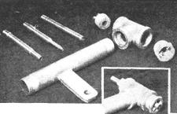
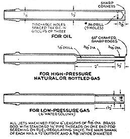
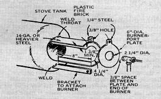
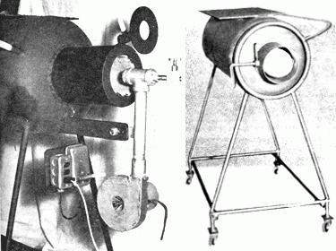
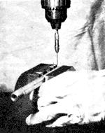
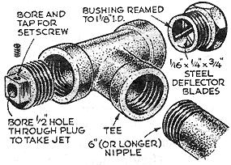

Reprinted Courtesy of POPULAR SCIENCE Monthly. ©1961 by
Popular Science Publishing Co., Inc.
BILL CHENEY
POPULAR SCIENCE
355 Lexington Avenue, New York, N.Y. 10017
SO YOU GOT THE DOME UP THIS SUMMER AND IT SHOT YOUR ENTIRE BUDGET. YOU'VE ALREADY MOVED IN, BUT WINTER'S COMIN' ON AND YOU HAVE NO IDEA HOW YOU'RE GONNA KEEP WARM. WOULDN'T IT BE NICE IF YOU COULD FIND SOME WAY TO HEAT THE THING FREE . . . AND WOULDN'T IT BE EVEN NICER TO GET PAID FOR KEEPING WARM?
YES, INDEED. AND YOU CAN DO IT TOO. BILL CHENEY DOES. ALTHOUGH BILL HEATS A SHOP AND NOT A HOME WITH THE RIG DESCRIBED IN THIS ARTICLE, THERE'S NO REASON WHY IT CAN'T SEE YOU THROUGH THAT FIRST HOMESTEADING WINTER . . . OR MORE.
NATURALLY, MOTHER ADVISES THAT YOU FOLLOW CONSTRUCTION DRAWINGS EXACTLY AND OBSERVE PROPER PRECAUTIONS WHEN USING YOUR HEATER.
The fuel I burn to heat my shop doesn't cost me a penny. In fact, I'm paid a buck for every 100 gallons I haul away. It's old crankcase oil, and gas stations are happy to have me pump it out of their waste tanks.
I built my own stove from a condemned bottled-gas cylinder. You can pick one up for peanuts because legally they can't be used again, and it's too costly to cut them up for scrap. If you can't get one, a 30, 50, or 100 gallon steel drum can be substituted. My stove cylinder is 14" by 40", but these dimensions aren't critical. The ones for the throat and firing port are, since they guarantee the hot throat that's required to burn any fuel. I circulate the heat with a small electric fan, and there's plenty to spread around: With clean oil, the heater can produce up to 500,000 BTUs per hour.
It's clean heat, too, although some smoke is generated when the burner is first started. To carry this (and all carbon monoxide fumes) outside, a stack is required. Where erecting one is impractical, you can burn natural or bottled gas, instead. You just insert a different jet nozzle. When burning gas fuels, I exhaust right into the shop; there's some water vapor, but not enough to cause troublesome condensation. Better check local regulations, though. If they specify a stack for gas, too, you might as well enjoy the economy of crankcase oil.
Start with the stove. If you've been able to pick up an old bottled-gas cyl inder, you must prepare it in a special way. Set the tank upright on its base and fill it with water. Lay out an 8" circle at the crown of the domed top. Using a cutting torch, pierce the tank with a short arc cut out on this circle. (As the cut will be below water line, water will flow out until level with it.) Complete the circle and drain the tank.
With the tank up-ended, cut a 6" diameter hole in the center of the base for the exhaust. It's in the center so heated air will build up in the top of the stove, improving combustion as well as retaining heat. I formed my exhaust pipe by bending a sheet of 1/8" steel plate, but lighter material can be used.
Weld the throat at the other end, and complete the stove by placing it on its side in a sturdy stand. Mine is a pipe frame welded to the cylinder and equipped with casters so the stove can be rolled around the shop or used outside.
You need lots of air to burn the fuel properly. I bought a used vacuum cleaner blower and brazed a 1" pipe coupling into its outlet for attaching the burner pipe. Since throttling the air output causes the blower to speed up, an airflow valve could damage the motor. Instead, I installed a rheostat, salvaged from a sewing machine, to regulate the motor speed.
The heart of the heater is the burner itself. It's made of four black-iron 1" pipe fittings. The deflector imparts a swirling motion to the blower air that helps mix it with the fuel from the jet. The jet is secured with a setscrew so it can be adjusted-or replaced with another type if the fuel is changed. The position of the jet, in or out, depends on the choice of fuel, and-if it is gas-the fuel pressure.
When oil is used, the bottom of the supply tank should be about a foot above the burner.
To start the burner, if oil is the fuel, open the port plate and thrust a crumpled newspaper or oil-soaked rag well into the throat. Light this, close the port turn on a little air, and slowly open the fuel valve until oil ignites in the throat. Gradually increase the air supply; then give more oil. Once the throat becomes hot, increase the flow of both air and oil, experimenting for the best mixture and proper jet position When properly set, there should be no smoke or soot. To shut the stove off turn off the oil first, letting the blower run until the fire is completely out. If this isn't done, oil may drip onto the hot throat and flame will puff out of the burner port.
When firing with gas, start the blower at low speed and hold a piece of burning paper just below the closed port while slowly turning on the gas.
Whatever your fuel, never look directly into the port; always inspect it at an angle, or use a small mirror. While the fuel can't explode, the great heat might singe your whiskers.
|
 THREE INTERCHANGEABLE JETS (for different fuels) slip through bored plug and deflector made from bushing, as in insert. Braze blades at 15-degree angle from axis. |
 BURNER AND BLOWER ASSEMBLY is bracketed to a converted bottled-gas cylinder, ready to be connected to a fuel line. Rheostat (below bracket) regulates blower motor. Rear of stove (right) needs damper if gas is burned instead of oil. Disk is 1/8"" steel plate, 1"" smaller in diameter than exhaust pipe; shaft is 1/2"" steel rod. Platform welded on top of stove is optional. |
 DRILLING DISCHARGE HOLES in closed end of oil jet is critical operation. Sharp edges are essential for clean burning. Be sure drill runs true at high speeds; don't hold jet in fingers. |
|
 |
 |
 |